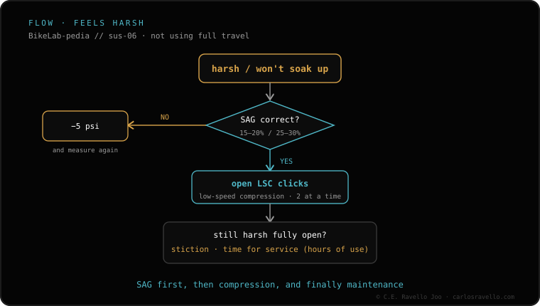

If the fork won't track small bumps and feels harsh, the most common cause is too much air pressure. Check it in this order: 1) set the sag (15-20% on a fork); 2) if sag is low, drop pressure 5 psi at a time until it tracks small bumps without losing support; 3) open low-speed compression (LSC) clicks. If it's still harsh with correct sag, suspect static friction or too many tokens. If instead it bottoms out on big hits, that's the opposite problem and you treat it differently.
Before you touch anything inside, it's almost always pressure. Start with sag: it tells you whether you're running too firm.
The order, from simplest to a service
1 · Check the sag — In your riding kit, measure how far it settles at rest: on a fork, aim for 15-20% of travel. If sag is very low, you're running too much pressure, which is why it won't track small bumps.
2 · Drop pressure 5 psi at a time — If sag comes out low (little settle), let out 5 psi, test, and repeat until the fork tracks small bumps without losing support or diving too deep. Go in small steps, not all at once.
3 · Open low-speed compression (LSC) — If it's closed too far, it stiffens the small-bump feel. Open it a few clicks and test on the same stretch you always ride. The final amount is your call, based on terrain and preference.
4 · If it's still harsh with correct sag — Suspect static friction: dry seals or many hours since service raise the breakaway friction. Also check whether you have too many tokens, which stiffen the end of the stroke and cut progression. Here it's a seal service or adjusting the token count.

The flow: from sag and pressure to compression, and only at the end to friction or tokens.
Common mistake: opening all the compression or pulling tokens before checking sag. If you're running too much pressure, no amount of clicks will hide it: the fork will still refuse to track small bumps.
Still harsh with correct sag?
Tell us the fork model, your weight and the pressure you run, and we'll point you to what to check before opening anything. Message us on WhatsApp
FAQ
Why does it feel so harsh on small bumps?
Almost always too much pressure: the fork won't track the ground. Check sag (15-20%) and, if it's low, drop pressure 5 psi at a time.
What do I check after pressure?
Open low-speed compression (LSC) clicks in steps and test. How much to open is your call, based on terrain.
What if it's still harsh with correct sag?
Suspect static friction (dry seals / hours since service) or too many tokens. It's a seal service or adjusting tokens.